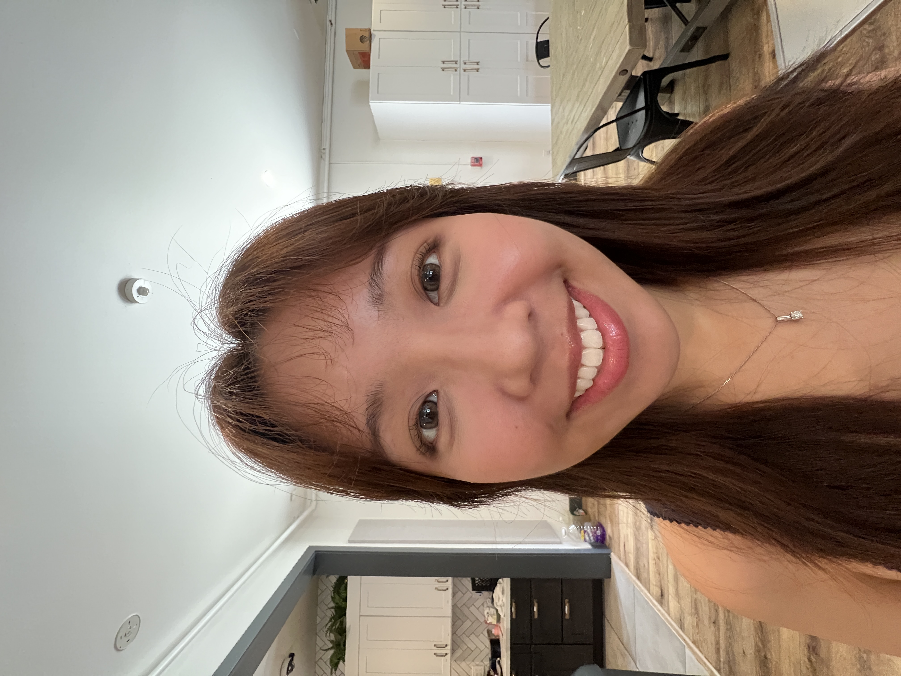
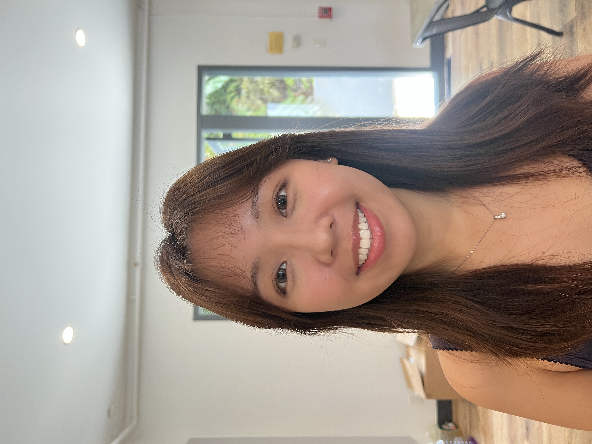
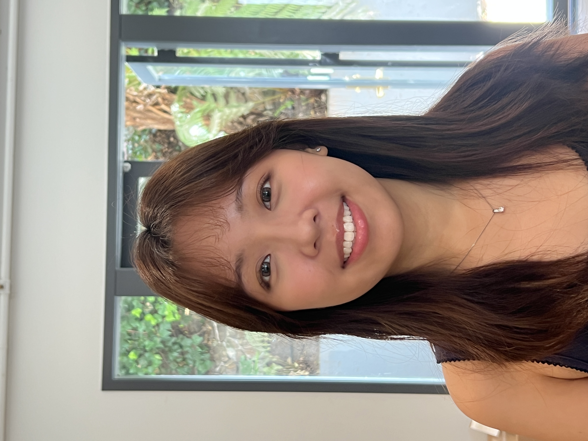
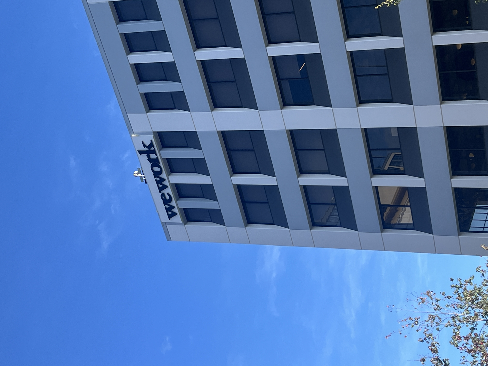
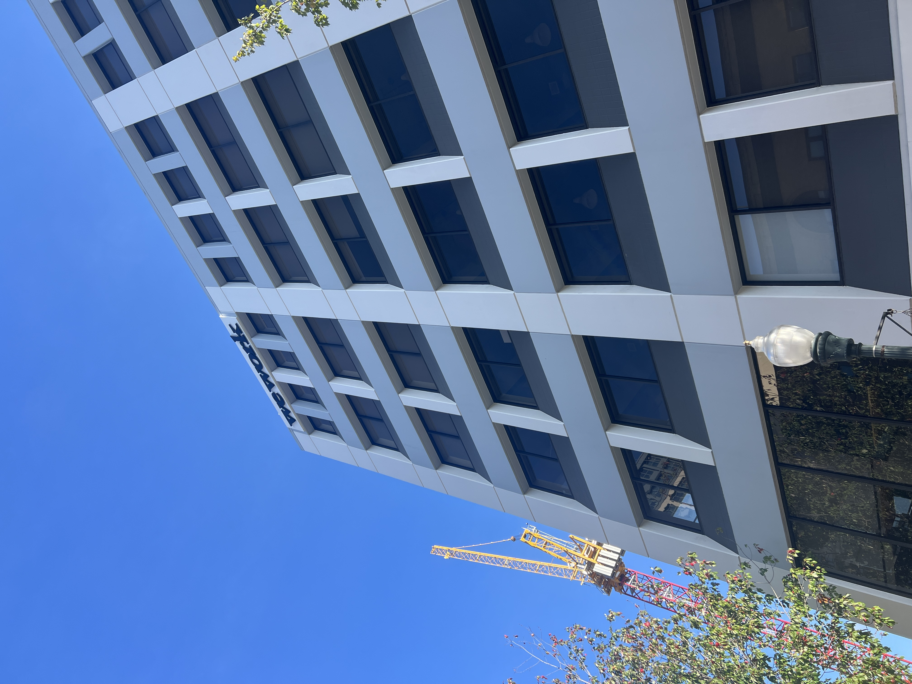

As the camera zooms in and moves further from my face (0.5x to 5x), facial features appear progressively more compressed and natural-looking. Wide-angle shots taken up close (0.5x) exaggerate my nose and distort proportions, since the camera is close enough that different parts of the face are at meaningfully different distances from the lens.

0.5x

1x

2x
3x
4x
5x
The same effect shows up at building scale. Shot from far away with zoom, the facade looks flattened and compressed, and parallel lines stay closer to parallel. Shot up close without zoom, the same building shows much stronger perspective distortion, since the near and far parts of the facade differ more in distance from the camera.

Far away, zoomed in

Close up, no zoom
By physically moving the camera while zooming in the opposite direction, my subject stays a constant size in frame while the background appears to stretch or compress, creating the classic "Vertigo effect."